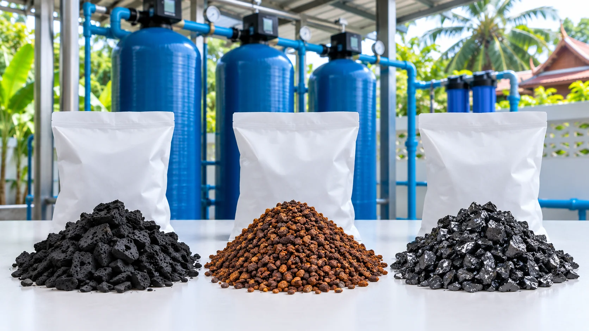
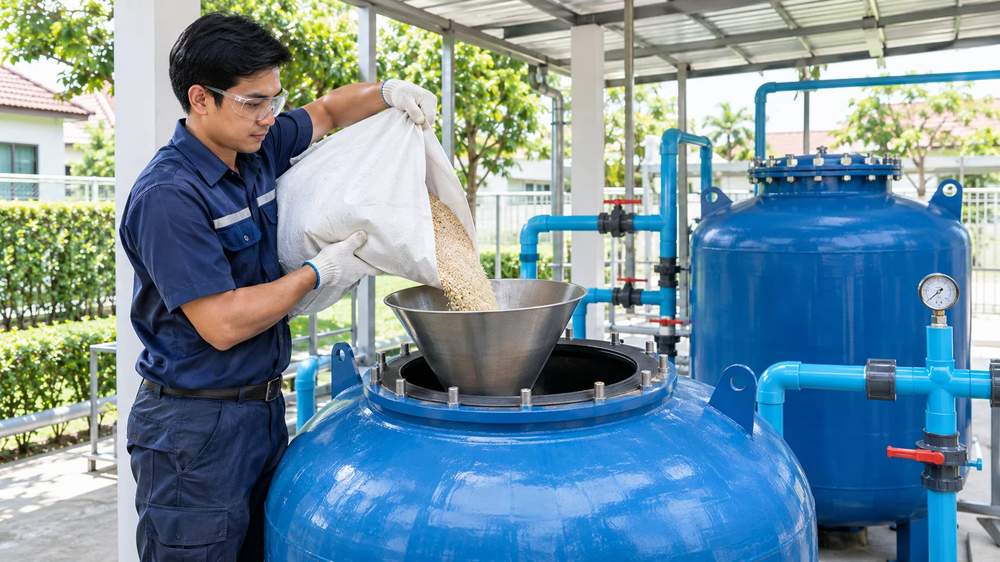

สารกรองน้ำประปาและน้ำบาดาล พร้อมบริการเปลี่ยนสารกรอง
สารกรองน้ำประปาและสารกรองน้ำบาดาล คาร์บอน แมงกานีส และแอนทราไซต์ พร้อมบริการเปลี่ยนสำหรับเครื่อง Sunnex และเครื่องกรองทั่วไป เลือกชนิดและปริมาณให้สัมพันธ์กับสภาพน้ำและถังกรองเดิม

สารกรองน้ำและบริการของ Sunnex
เลือกดูรายละเอียดสารกรองน้ำขนาดบรรจุ 25 กิโลกรัมต่อถุง และบริการเปลี่ยนสารกรองในหน้าสินค้าเดียว ครอบคลุมทั้งการเลือกวัสดุและการดูแลถังกรองเดิม
สารกรองน้ำมีอะไรบ้าง? เลือกให้ตรงหน้าที่
สารกรองน้ำคือวัสดุในถังกรองที่ช่วยดักตะกอน ดูดซับสารบางชนิด หรือทำงานร่วมกับกระบวนการปรับคุณภาพน้ำ วัสดุแต่ละชนิดมีหน้าที่ต่างกัน สำหรับหมวดนี้ Sunnex จำหน่าย 3 ชนิดหลักดังนี้
สารกรองคาร์บอน
ถ่านกัมมันต์ หรือ Activated Carbon เน้นดูดซับกลิ่น รส และสารอินทรีย์บางชนิด รวมถึงลดคลอรีนเมื่อเลือกวัสดุและเงื่อนไขใช้งานเหมาะสม ใช้เป็นส่วนหนึ่งของการปรับคุณภาพน้ำ ไม่ใช่วัสดุลดความกระด้างหรือฆ่าเชื้อทุกชนิด
สารกรองแมงกานีส
พิจารณาใช้ในระบบลดเหล็กและแมงกานีส เช่น งานน้ำบาดาลที่พบคราบสนิมหรือตะกอนดำ ต้องดูผลตรวจน้ำ ค่า pH และเงื่อนไขของสารกรอง บางระบบต้องเตรียมน้ำหรือใช้การออกซิไดซ์ร่วมด้วย
สารกรองแอนทราไซต์
Anthracite เป็นวัสดุกรองเม็ดสำหรับดักตะกอนและสารแขวนลอย ช่วยลดความขุ่นในระบบกรองหลายชั้นตามแบบ แม้มีสีดำคล้ายคาร์บอน แต่หน้าที่หลักต่างกัน ไม่ควรสลับใช้แทนกันโดยไม่ประเมิน
สารกรองชนิดอื่น เช่น เรซินลดความกระด้าง ทรายกรอง และกรวดรองชั้นกรอง มีใช้ในระบบน้ำเช่นกัน แต่รายการในหมวดนี้เน้น 3 ชนิดที่ Sunnex จำหน่ายจริง ไม่ได้แสดงว่าวัสดุทุกชนิดเป็นสินค้าที่มีขาย
อ่านคุณสมบัติและแนวทางใช้งานเพิ่มเติมในหน้า สารกรองน้ำคาร์บอน แมงกานีส และแอนทราไซต์ พร้อมบริการเปลี่ยน
เลือกสารกรองน้ำประปาและสารกรองน้ำบาดาลอย่างไร
| ปัญหาน้ำ | สารกรองที่ควรประเมิน | สิ่งที่ต้องดูร่วมกัน |
|---|---|---|
| น้ำประปามีกลิ่น | คาร์บอน | ต้นเหตุของกลิ่น ชนิดสารเป้าหมาย เวลาสัมผัส และการอิ่มตัวของวัสดุ |
| น้ำเหลืองหรือคราบสนิม | แมงกานีส | ผลตรวจเหล็ก แมงกานีส ค่า pH และกระบวนการเตรียมน้ำ |
| น้ำประปาขุ่น มีตะกอน | แอนทราไซต์ | ความขุ่น อัตราการไหล ชั้นกรอง และประสิทธิภาพการล้างย้อน |
หาก น้ำประปาหมู่บ้านไม่สะอาดหรือขุ่นต่อเนื่อง ควรตรวจแหล่งน้ำ ถังพัก ท่อ และการทำงานของเครื่องกรองร่วมกัน สีและกลิ่นช่วยบอกอาการเบื้องต้น แต่ใช้แทนผลตรวจคุณภาพน้ำไม่ได้
ถังกรองน้ำขนาดเดิม ต้องใช้สารกรองเท่าไร?
ดูขนาดถังและข้อมูลวัสดุ
เส้นผ่านศูนย์กลางถัง ความสูงชั้นกรอง ความหนาแน่นวัสดุ และพื้นที่เผื่อการขยายตัวขณะล้างย้อน ล้วนมีผลต่อปริมาณบรรจุ จึงไม่ควรกำหนดจำนวนถุงจากความจุถังอย่างเดียว
ดูปริมาณน้ำและระบบล้างย้อน
อัตราการไหลขณะกรองและขณะ Backwash ต้องสัมพันธ์กับวัสดุ ปั๊ม วาล์ว และทางระบาย ลำดับชั้นกรองควรยึดแบบระบบและข้อกำหนดของผลิตภัณฑ์ ไม่ใช้สูตรเดียวกับทุกถัง
ส่งภาพเครื่อง ขนาดถัง รุ่นวาล์ว และผลตรวจน้ำที่มีให้ทีมงาน เพื่อประเมินสารกรองน้ำราคาและปริมาณที่เหมาะสมก่อนสั่งซื้อ หรือหากวางระบบใหม่ ดู ถังกรองน้ำประปาและเครื่องกรองน้ำประปา Sunnex ประกอบการเลือกได้
บริการเปลี่ยนสารกรองน้ำ สำหรับเครื่อง Sunnex และเครื่องกรองทั่วไป

ช่วยดูแลเครื่องกรองเดิมตั้งแต่ตรวจสภาพถังและอุปกรณ์ ประเมินชนิดสารกรอง นำวัสดุเดิมออก ทำความสะอาด เติมสารตามแบบระบบ และล้างเตรียมก่อนตรวจการทำงาน โดยยืนยันขอบเขตงานจากสภาพหน้างานก่อนเสนอราคา
เหมาะกับผู้ดูแล ระบบกรองน้ำประปาหมู่บ้านและระบบน้ำประปาชุมชน รวมถึงเครื่องกรองน้ำหมู่บ้าน เครื่องกรองน้ำ อบต. และโรงกรองน้ำที่ต้องการปรับปรุงการดูแลอุปกรณ์เดิม
ดูรายละเอียดบริการเปลี่ยนสารกรอง →Backwash อัตโนมัติ ช่วยดูแลชั้นกรองได้สม่ำเสมอ
จุดเด่นของเครื่องกรอง Sunnex ที่รองรับระบบล้างย้อนอัตโนมัติ
ช่วยลดงานเปิด–ปิดวาล์วด้วยมือและนำตะกอนสะสมออกตามการตั้งค่าที่เหมาะกับการใช้งาน เหมาะกับงานเครื่องกรองน้ำประปาหมู่บ้านและระบบน้ำประปา อบต. ที่ต้องดูแลต่อเนื่อง ทั้งนี้ต้องตรวจปั๊ม วาล์ว และทางระบายให้ทำงานจริงด้วย
สำหรับระบบใหม่ เลือกประเมิน ถังกรองน้ำประปาผิวดิน หรือ ถังกรองน้ำบาดาล ตามแหล่งน้ำ ความสามารถล้างย้อนอัตโนมัติเป็นคุณสมบัติของเครื่องและชุดควบคุมที่รองรับ การเปลี่ยนสารกรองอย่างเดียวไม่ได้ทำให้เครื่องทั่วไปเป็นระบบอัตโนมัติ
Backwash ช่วยนำตะกอนออก แต่ไม่ได้ฟื้นความสามารถดูดซับของคาร์บอนที่อิ่มตัว จึงยังต้องติดตามคุณภาพน้ำและประเมินการเปลี่ยนสารกรอง
ดูแลและเปลี่ยนสารกรองน้ำเมื่อไรให้เหมาะกับระบบ
สังเกตการไหลและคุณภาพน้ำ
น้ำไหลลดลง กลิ่นหรือสีกลับมา หรือค่าคุณภาพน้ำหลังกรองเปลี่ยนไป เป็นเหตุให้ตรวจระบบก่อนตัดสินใจเปลี่ยนสาร
ล้างย้อนตามภาระใช้งาน
อ้างอิงคู่มือ วัสดุ และปริมาณตะกอนจริง ตรวจว่ารอบอัตโนมัติทำงานถูกต้อง ไม่กำหนดให้ทุกระบบล้างทุกจำนวนวันเท่ากัน
ติดตามก่อนหมดประสิทธิภาพ
บันทึกประวัติใช้งาน การล้าง และผลตรวจน้ำ วางแผนเปลี่ยนเมื่อวัสดุเสื่อม อิ่มตัว หรือแก้การอุดตันด้วยการล้างไม่ได้
ผู้ดูแล ระบบน้ำประปาหมู่บ้านควรวางแผนบำรุงรักษา ร่วมกับถังพักและระบบจ่ายน้ำ หากต่อยอดผลิตน้ำดื่ม ควรประเมินการเตรียมน้ำก่อนเข้า เครื่องกรองน้ำดื่ม RO และกระบวนการฆ่าเชื้อให้เหมาะสม ไม่สรุปว่าน้ำดื่มได้จากความใสหรือชนิดสารกรองเพียงอย่างเดียว
ตามข้อมูล EPA คาร์บอนต้องเปลี่ยนหรือฟื้นสภาพอย่างเหมาะสมเมื่อหมดความสามารถดูดซับ ส่วน DWI อธิบายว่าการลดเหล็กและแมงกานีสต้องพิจารณาเคมีของน้ำและกระบวนการบำบัดร่วมกัน
คำถามที่พบบ่อยเกี่ยวกับสารกรองน้ำประปา
สารกรองน้ำมีอะไรบ้าง และในหมวดนี้มีขายกี่ชนิด?
Sunnex จำหน่ายสารกรองคาร์บอน แมงกานีส และแอนทราไซต์ พร้อมบริการเปลี่ยนสารกรอง ส่วนวัสดุอื่น เช่น เรซินและทราย มีบทบาทต่างกันในระบบน้ำ แต่ไม่ได้ระบุเป็นรายการขายในหมวดนี้
สารกรองน้ำประปากับสารกรองน้ำบาดาลเลือกเหมือนกันไหม?
ต้องเลือกจากปัญหาและผลตรวจของน้ำแต่ละแหล่ง น้ำประปาอาจเน้นกลิ่นหรือสารแขวนลอย ส่วนน้ำบาดาลบางพื้นที่ต้องประเมินเหล็ก แมงกานีส และคุณภาพน้ำด้านอื่นเพิ่มเติม
สารกรองน้ำราคาเท่าไร และต้องใช้กี่ถุง?
ราคาขึ้นกับชนิด ปริมาณ และขอบเขตบริการ จำนวนถุงต้องดูขนาดถัง แบบชั้นกรอง และข้อกำหนดวัสดุ ส่งข้อมูลเครื่องให้ทีมงานช่วยประเมินก่อนเสนอราคาได้
สารกรองน้ำซื้อที่ไหน พร้อมขอคำแนะนำก่อนซื้อได้หรือไม่?
สอบถาม Sunnex Technology ผ่าน LINE @sunnext หรือโทร 02-115-1484 และ 081-424-1186 ได้ พร้อมส่งภาพถังและข้อมูลคุณภาพน้ำเพื่อช่วยเลือกชนิดสารกรอง
รับเปลี่ยนสารกรองของเครื่องยี่ห้ออื่นด้วยไหม?
รับประเมินทั้งเครื่อง Sunnex และเครื่องกรองทั่วไป โดยตรวจสภาพถัง วาล์ว อุปกรณ์ภายใน และเงื่อนไขหน้างานก่อนยืนยันรายการและบริการ
Backwash อัตโนมัติแล้ว ยังต้องเปลี่ยนสารกรองไหม?
ยังต้องประเมินการเปลี่ยน เพราะการล้างย้อนเน้นพาตะกอนออก ไม่คืนความสามารถดูดซับให้คาร์บอนที่อิ่มตัว และระบบอัตโนมัติยังต้องตรวจการทำงานสม่ำเสมอ
ควรเปลี่ยนสารกรองน้ำทุกกี่เดือน?
ไม่มีรอบเดียวสำหรับทุกระบบ ต้องพิจารณาคุณภาพน้ำ ปริมาณใช้งาน ชนิดวัสดุ การล้างย้อน และผลตรวจน้ำหลังกรอง ร่วมกับคู่มือหรือการประเมินเครื่องจริง
น้ำประปาหมู่บ้านขุ่นหรือมีกลิ่น เปลี่ยนสารกรองอย่างเดียวพอไหม?
บางกรณีต้องปรับการเตรียมน้ำดิบ ถังพัก ท่อ หรือการฆ่าเชื้อร่วมด้วย ควรหาต้นเหตุก่อนเลือกสารกรอง เพื่อให้การปรับปรุงระบบกรองน้ำประปาแก้ปัญหาได้ตรงจุด